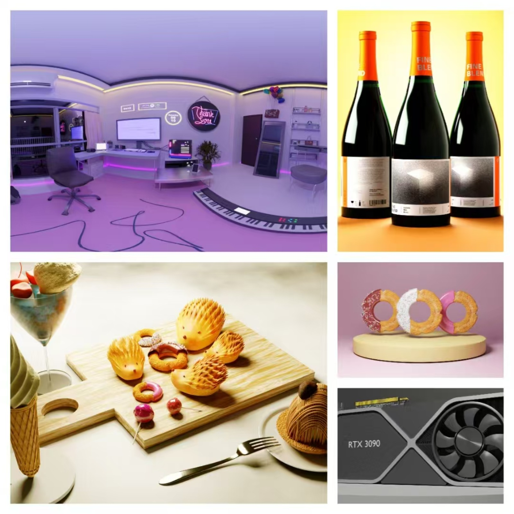
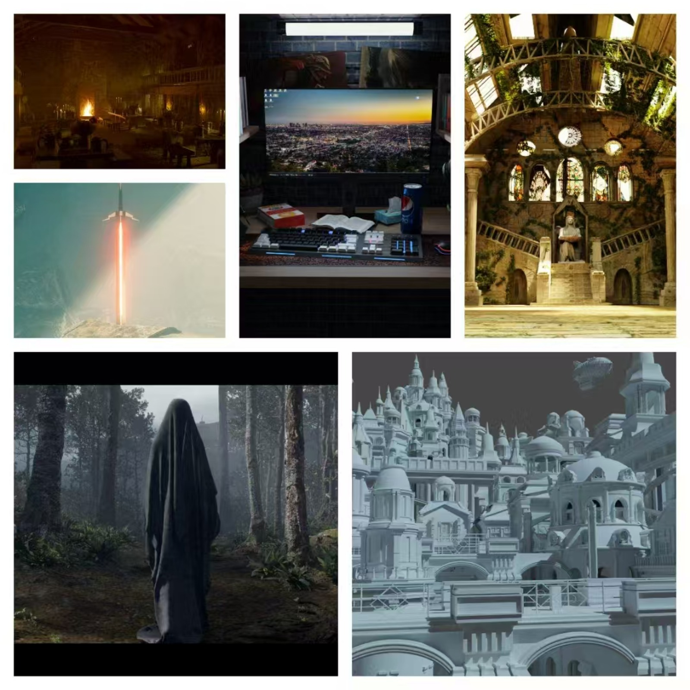
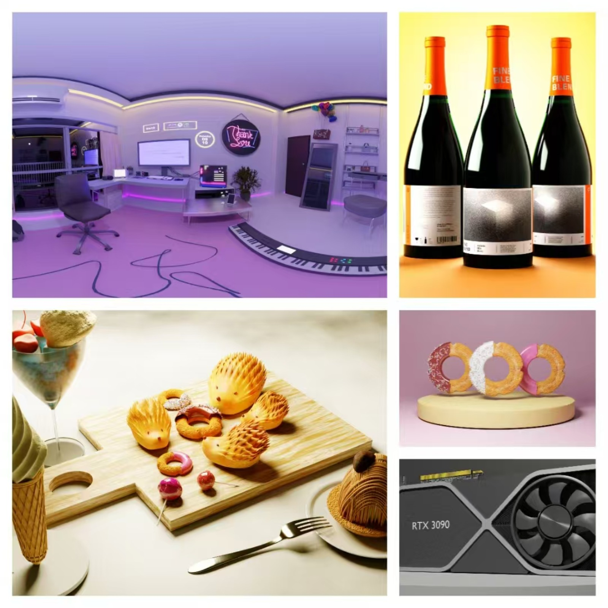
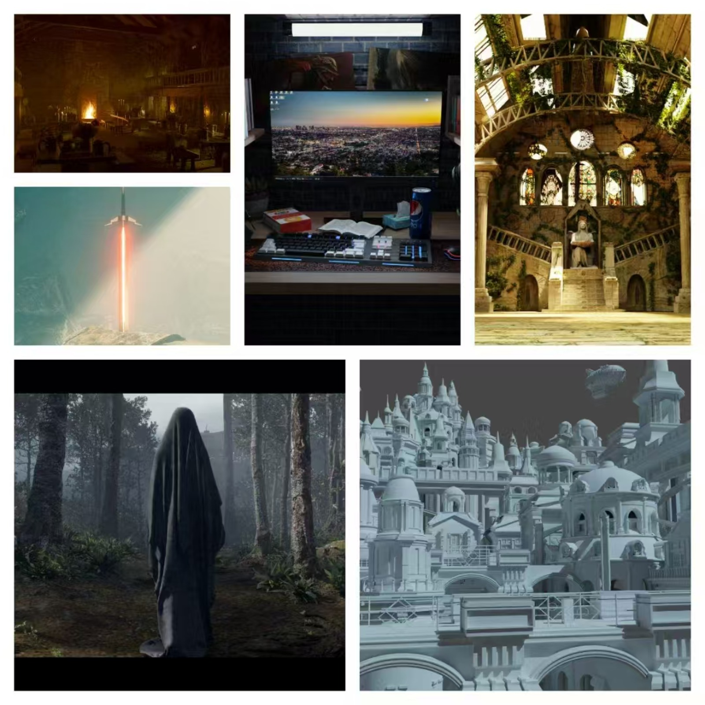

Project

OpenGL渲染引擎构建实战
项目从零搭建OpenGL实时渲染框架，支持模型导入、纹理贴图、光照计算、材质系统与后处理效果，涵盖完整渲染管线开发流程。项目面向引擎底层学习者与图形学研究者，采用现代C++封装架构，逐步实现核心功能。
核心技术与模块
- 日志系统，基于
spdlog实现全局日志输出，覆盖渲染流程、资源加载等关键步骤 - 图像加载，使用
stb_image加载纹理资源，支持RGBA与多格式图像贴图 - 模型解析，集成
Assimp支持OBJ等格式模型导入，读取网格、法线、UV及多材质信息 - 材质系统，实现漫反射、镜面高光、法线贴图等效果，支持多纹理绑定与自定义 Shader 属性
- 渲染管线，封装
Shader类，统一管理着色器加载、编译、链接与Uniform变量更新 - 帧缓冲机制，构建
FBO支持屏幕纹理输出与后处理管线，为实现模糊、高光、屏幕空间特效奠定基础 - 摄像机控制，实现完整摄像机类，支持位置/视角控制及View/Projection矩阵计算
 


